第 20 章
模板匹配 Template Matching
本章共 4 个小节 · 模板匹配的基础观念 · 模板匹配函数 matchTemplate() · 单模板匹配 · 多模板匹配
模板匹配是将模板图像在原始图像中移动遍历，逐一比较每个位置的相似程度。OpenCV 提供 matchTemplate() 函数，可以用不同匹配方法找出单一目标或多目标。
20-1
模板匹配的基础观念
假设原始图像是 A，模板图像是 B，在执行模板匹配时先决条件是 A 图像必须大于或等于 B 图像。所谓的模板匹配，是指将 B 图像在 A 图像中移动遍历，完成匹配的方法。
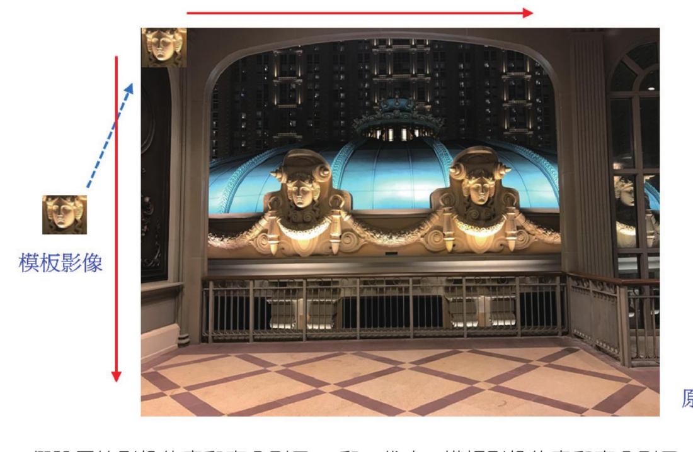
模板图像在原始图像中横向、纵向移动，逐一比较。参考原书第 20-2 页。
假设原始图像的宽和高分别用 W 和 H 代表，模板图像的宽和高分别用 w 和 h 代表。模板图像在往右移的匹配中必须比较 W - w + 1 次。
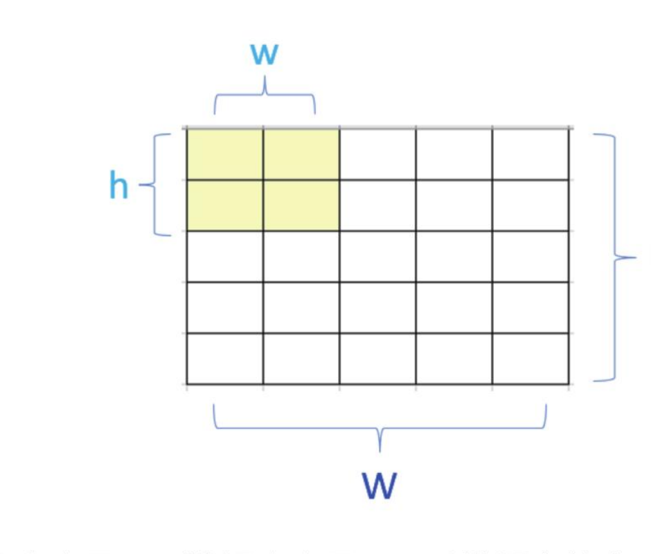
图像宽度是 5、模板宽度是 2 时，横向比较次数为 5 - 2 + 1 = 4。参考原书第 20-4 页。
在往下移动过程必须比较 H - h + 1 次，所以整个比较过程是 (W - w + 1) * (H - h + 1) 次。matchTemplate() 的回传结果是一个宽与高分别为 W - w + 1 和 H - h + 1 的矩阵。
20-2
模板匹配函数 matchTemplate()
20-2-1 认识匹配函数 matchTemplate()
OpenCV 提供了 matchTemplate() 函数，可以让我们在一个较大的图像中找寻模板图像。这个函数的语法如下。
result = cv2.matchTemplate(image, templ, method, mask)
| 参数 / 返回值 | 说明 |
|---|
result | 比较结果的阵列。 |
image | 原始图像。 |
templ | 模板图像。 |
method | 搜寻匹配程度的方法，有 6 个可能方法。 |
mask | 模板使用的遮罩，需与 templ 有相同大小；也可以直接使用预设值。 |
| 具名常数 | 说明 |
|---|
cv2.TM_SQDIFF | 平方差匹配法，完全匹配时值是 0，匹配越差值越大。 |
cv2.TM_SQDIFF_NORMED | 归一化平方差匹配法。 |
cv2.TM_CCORR | 相关匹配法，将模板图像与输入图像相乘，数值越大匹配越好；如果是 0 表示匹配最差。 |
cv2.TM_CCORR_NORMED | 归一化相关匹配法。 |
cv2.TM_CCOEFF | 相关系数匹配法，采用相关匹配法对模板减去均值的结果和原始图像减去均值结果进行匹配。1 表示最好匹配，0 表示没有相关，-1 表示最差匹配。 |
cv2.TM_CCOEFF_NORMED | 归一化相关系数匹配法。 |
20-2-2 模板匹配结果
假设原始图像的宽和高分别用 W 和 H 代表，模板图像的宽和高分别用 w 和 h 代表。函数 matchTemplate() 的回传值是一个矩阵，矩阵大小是 (H - h + 1, W - w + 1)。
程序实例 ch20_1.py：使用 TM_SQDIFF 方法，了解 matchTemplate() 函数的回传结果
# ch20_1.py
import cv2
src = cv2.imread("macau_hotel.jpg", cv2.IMREAD_COLOR)
cv2.imshow("Src", src) # 显示原始图像
H, W = src.shape[:2]
print(f"原始图像高 H = {H}, 宽 W = {W}")
templ = cv2.imread("head.jpg")
cv2.imshow("Temp1", templ) # 显示模板图像
h, w = templ.shape[:2]
print(f"模板图像高 h = {h}, 宽 w = {w}")
result = cv2.matchTemplate(src, templ, cv2.TM_SQDIFF)
print(f"result大小 = {result.shape}")
print(f"阵列内容 \n{result}")
cv2.waitKey(0)
cv2.destroyAllWindows()
原始图像高 H = 462, 宽 W = 621
模板图像高 h = 45, 宽 w = 51
result大小 = (418, 571)
阵列内容
[[33817698. 339... 341... ...]
[61639304. 65130436. 33998... ...]
...
[15917688. 36981... 34963... ...]]
上述程序列出了原始图像与模板图像的高与宽，以及结果 result 的矩阵大小。读者可以验证公式：H - h + 1 = 462 - 45 + 1 = 418，W - w + 1 = 621 - 51 + 1 = 571。
20-3
单模板匹配
所谓的单模板匹配是指模板图像数量有一个。这时可能会有一个、二个或更多个与模板相类似的原始图像。如果只针对一个最相似当作结果，称为单目标匹配；如果要将所有相类似的做匹配，则称多目标匹配，将在 20-4 节说明。
20-3-1 回顾 minMaxLoc() 函数
在第 17-7 节已经介绍过 minMaxLoc() 函数。
minVal, maxVal, minLoc, maxLoc = cv2.minMaxLoc(src, mask=mask)
如果使用 matchTemplate() 函数并采用 TM_SQDIFF 方法找寻匹配结果，所用到的是 minMaxLoc() 回传的 minVal 和 minLoc 结果，这两个参数分别是最小值与最小值座标。
20-3-2 单模板匹配的实例
程序实例 ch20_2.py：原始图像是 shapes.jpg，模板图像是 heart.jpg，找出最匹配的图案，同时加上外框
这个实例使用 TM_SQDIFF_NORMED 归一化平方差匹配法，所以回传数值会小于 1.0。TM_SQDIFF_NORMED 完全匹配时值是 0，匹配越差值越接近 1。
# ch20_2.py
import cv2
src = cv2.imread("shapes.jpg", cv2.IMREAD_COLOR)
cv2.imshow("Src", src) # 显示原始图像
templ = cv2.imread("heart.jpg", cv2.IMREAD_COLOR)
cv2.imshow("Temp1", templ) # 显示模板图像
height, width = templ.shape[:2] # 获得模板图像的高与宽
# 使用 cv2.TM_SQDIFF_NORMED 执行模板匹配
result = cv2.matchTemplate(src, templ, cv2.TM_SQDIFF_NORMED)
minVal, maxVal, minLoc, maxLoc = cv2.minMaxLoc(result)
upperleft = minLoc # 左上角座标
lowerright = (minLoc[0] + width, minLoc[1] + height)
dst = cv2.rectangle(src, upperleft, lowerright, (0, 255, 0), 3)
print(f"result大小 = {result.shape}")
cv2.imshow("Dst", dst)
print(f"阵列内容 \n{result}")
cv2.waitKey(0)
cv2.destroyAllWindows()
result大小 = (200, 467)
阵列内容
[[0.55169237 0.55214185 0.55283785 ... 0.5041115 0.50364405 0.50299054]
[0.55083525 0.5516094 0.5525552 ... 0.4956044 0.49513865 0.49453667]
[0.5501096 0.5511014 0.5522254 ... 0.48673072 0.4863766 0.48580223]
...
[0.5906543 0.5907403 0.5908509 ... 0.37875912 0.37878385 0.37881452]
[0.5897267 0.5898022 0.5898969 ... 0.37939134 0.37941784 0.37945503]
[0.588898 0.5889616 0.5890734 ... 0.38009483 0.3801263 0.38016194]]
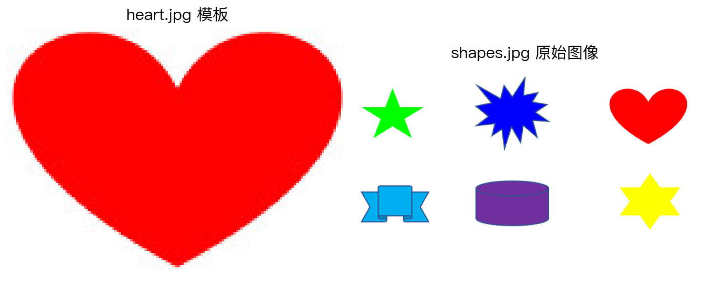
模板图像是心型，原始图像中含多种图形。参考原书第 20-7 页。
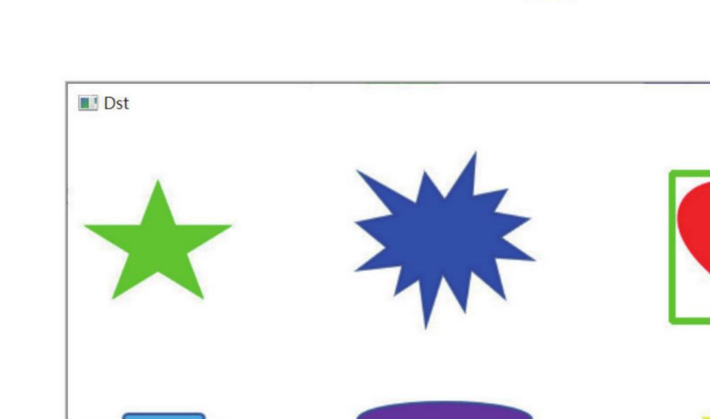
相似度最高的心型图案已经被圈起来。参考原书第 20-7 页。
程序实例 ch20_3.py：重新修订 ch20_2.py，进行人脸辨识
# ch20_3.py
import cv2
src = cv2.imread("g5.jpg", cv2.IMREAD_COLOR)
templ = cv2.imread("face1.jpg", cv2.IMREAD_COLOR)
height, width = templ.shape[:2] # 获得模板图像的高与宽
# 使用 cv2.TM_SQDIFF_NORMED 执行模板匹配
result = cv2.matchTemplate(src, templ, cv2.TM_SQDIFF_NORMED)
minVal, maxVal, minLoc, maxLoc = cv2.minMaxLoc(result)
upperleft = minLoc # 左上角座标
lowerright = (minLoc[0] + width, minLoc[1] + height)
dst = cv2.rectangle(src, upperleft, lowerright, (0, 255, 0), 3)
cv2.imshow("Dst", dst)
cv2.waitKey(0)
cv2.destroyAllWindows()
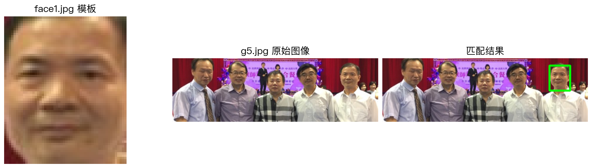
模板匹配也可以应用在人群中找寻某个人，相当于进行简单人脸匹配。参考原书第 20-8 页。
20-3-3 找出比较接近的图像
有时候会有一系列照片，读者可以想成有多张原始图像，然后要找出哪一张图像与模板图像比较接近。
程序实例 ch20_4.py：使用 2 张原始图像 knight0.jpg、knight1.jpg 与模板图像 knight.jpg 比较，最后输出比较接近的图像
# ch20_4.py
import cv2
src = [] # 建立原始图像阵列
src1 = cv2.imread("knight0.jpg", cv2.IMREAD_COLOR)
src.append(src1) # 加入原始图像串列
src2 = cv2.imread("knight1.jpg", cv2.IMREAD_COLOR)
src.append(src2) # 加入原始图像串列
templ = cv2.imread("knight.jpg", cv2.IMREAD_COLOR)
# 使用 cv2.TM_SQDIFF_NORMED 执行模板匹配
minValue = 1 # 设定预设的最小值
index = -1 # 设定最小值的索引
for i in range(len(src)):
result = cv2.matchTemplate(src[i], templ, cv2.TM_SQDIFF_NORMED)
minVal, maxVal, minLoc, maxLoc = cv2.minMaxLoc(result)
if minValue > minVal:
minValue = minVal # 记录目前的最小值
index = i # 记录目前的索引
seq = "knight" + str(index) + ".jpg"
print(f"{seq} 比较类似")
cv2.imshow("Dst", src[index])
cv2.waitKey(0)
cv2.destroyAllWindows()
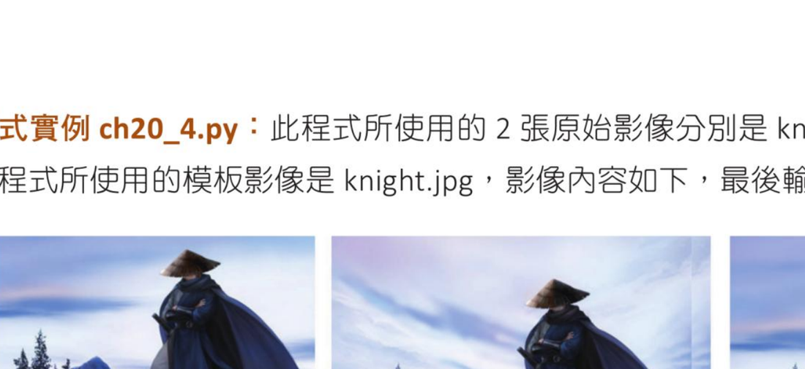
程序使用两张原始图像与一张模板图像比较。参考原书第 20-9 页。
20-3-4 多目标匹配的实例
本节主题是原始图像有多个图案与模板图像相同，然后必须找出所有相同的图案。这里使用 TM_CCOEFF_NORMED，完全相同的图案回传值是 1，匹配越差值越接近 -1。
程序实例 ch20_5.py：一个原始图像有多张图案与模板图像相同，逐列 row、逐行 col 找出值大于 0.95 的图案
# ch20_5.py
import cv2
src = cv2.imread("mutishapes.jpg", cv2.IMREAD_COLOR)
cv2.imshow("Src", src) # 显示原始图像
templ = cv2.imread("heart.jpg", cv2.IMREAD_COLOR)
cv2.imshow("Temp1", templ) # 显示模板图像
height, width = templ.shape[:2] # 获得模板图像的高与宽
# 使用 cv2.TM_CCOEFF_NORMED 执行模板匹配
result = cv2.matchTemplate(src, templ, cv2.TM_CCOEFF_NORMED)
for row in range(len(result)): # 找寻 row
for col in range(len(result[row])): # 找寻 column
if result[row][col] > 0.95: # 值大于 0.95 就算找到
dst = cv2.rectangle(src, (col, row),
(col + width, row + height),
(0, 255, 0), 3)
cv2.imshow("Dst", dst)
cv2.waitKey(0)
cv2.destroyAllWindows()
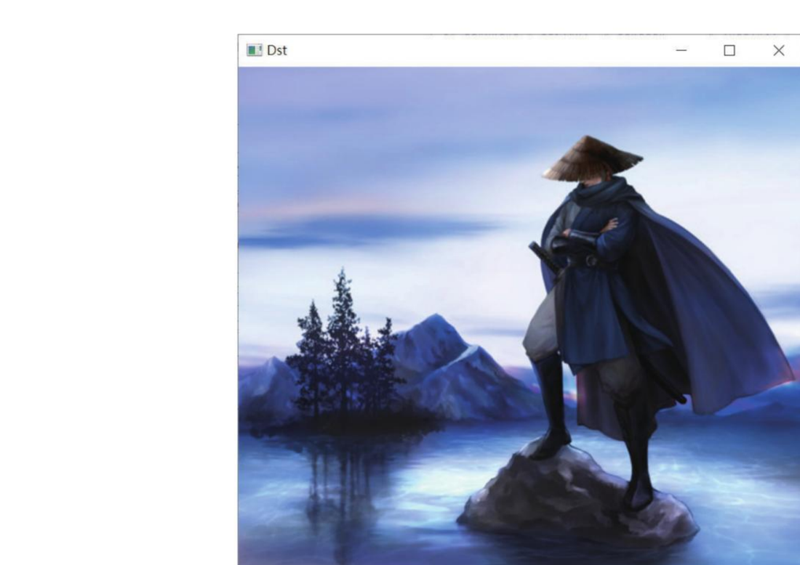
所有相似度最高的心型图案已经被圈起来。参考原书第 20-10 页。
20-3-5 在地图搜寻山脉
下列是百度地图，其中山脉符号可以当作模板图像，地图可以视作原始图像。程序可以将所有山脉圈起来。
程序实例 ch20_6.py：将山脉用红色框起来
# ch20_6.py
import cv2
src = cv2.imread("baidu.jpg", cv2.IMREAD_COLOR)
templ = cv2.imread("mountain_mark.jpg", cv2.IMREAD_COLOR)
h, w = templ.shape[:2] # 获得模板图像的高与宽
# 使用 cv2.TM_CCOEFF_NORMED 执行模板匹配
result = cv2.matchTemplate(src, templ, cv2.TM_CCOEFF_NORMED)
for row in range(len(result)): # 找寻 row
for col in range(len(result[row])): # 找寻 column
if result[row][col] > 0.95: # 值大于 0.95 就算找到了
dst = cv2.rectangle(src, (col, row),
(col + w, row + h),
(0, 0, 255), 3)
cv2.imshow("Dst", dst)
cv2.waitKey(0)
cv2.destroyAllWindows()
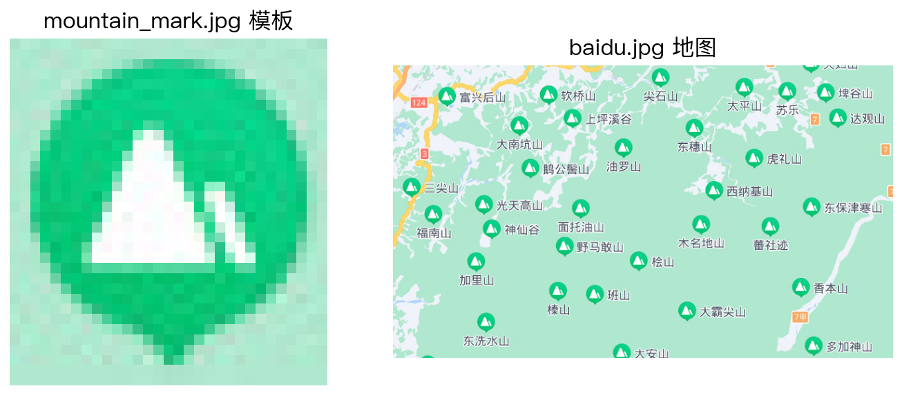
下方左图是山脉符号模板，右图是地图原始图像。参考原书第 20-12 页。
大部分山脉被框出；部分因框内圈外底色与模板不一致，匹配值小于 0.95，所以无法被框出。参考原书第 20-13 页。
20-3-6 计算距离最近的机场
此节实例是计算从地图中心点 (450, 180)，约在青年公园，然后找出最近的机场。原始图像可以看到桃园中正机场与台北松山机场。
程序实例 ch20_7.py：计算与输出到机场的距离，以及将比较近的距离绘制蓝色线
# ch20_7.py
import cv2
import math
start_x = 450 # 目前位置 x
start_y = 180 # 目前位置 y
src = cv2.imread("airport.jpg", cv2.IMREAD_COLOR)
templ = cv2.imread("airport_mark.jpg", cv2.IMREAD_COLOR)
dst = cv2.circle(src, (start_x, start_y), 10, (255, 0, 0), -1)
h, w = templ.shape[:2] # 获得模板图像的高与宽
# 使用 cv2.TM_CCOEFF_NORMED 执行模板匹配
ul_x = [] # 最佳匹配左上角串列 x
ul_y = [] # 最佳匹配左上角串列 y
result = cv2.matchTemplate(src, templ, cv2.TM_CCOEFF_NORMED)
for row in range(len(result)): # 找寻 row
for col in range(len(result[row])): # 找寻 column
if result[row][col] > 0.9: # 值大于 0.9 就算找到了
dst = cv2.rectangle(src, (col, row),
(col + w, row + h),
(255, 0, 0), 2)
ul_x.append(col) # 加入最佳匹配串列 x
ul_y.append(row) # 加入最佳匹配串列 y
# 计算目前位置到台北机场的距离
sub_x = start_x - ul_x[0] # 计算 x 座标差距
sub_y = start_y - ul_y[0] # 计算 y 座标差距
start_taipei = math.hypot(sub_x, sub_y) # 计算距离
print(f"目前位置到台北机场的距离 = {start_taipei:8.2f}")
# 计算目前位置到桃园机场的距离
sub_x = start_x - ul_x[1] # 计算 x 座标差距
sub_y = start_y - ul_y[1] # 计算 y 座标差距
start_taoyuan = math.hypot(sub_x, sub_y) # 计算距离
print(f"目前位置到桃园机场的距离 = {start_taoyuan:8.2f}")
# 计算最短距离
if start_taipei > start_taoyuan:
cv2.line(src, (start_x, start_y), (ul_x[1], ul_y[1]), (255, 0, 0), 2)
else:
cv2.line(src, (start_x, start_y), (ul_x[0], ul_y[0]), (255, 0, 0), 2)
cv2.imshow("Dst", dst)
cv2.waitKey(0)
cv2.destroyAllWindows()
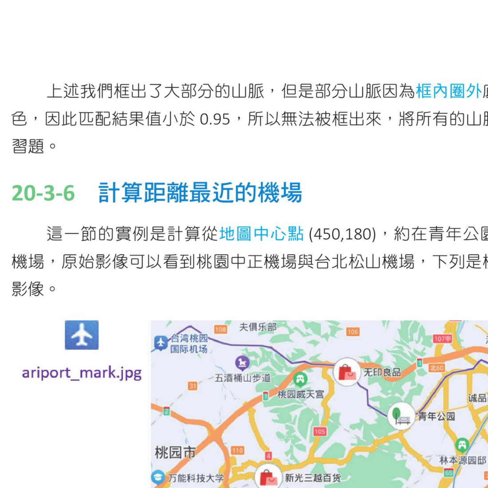
机场图示不是方正，四个角有内缩且颜色不一致，因此匹配阈值使用大于 0.9。参考原书第 20-13 页。
20-4
多模板匹配
所谓的多模板匹配就是原始图像有多个，但是模板图像也有多个。处理这类问题可以建立一个匹配函数，然后用 for 循环将所读取的模板图像送入匹配函数，再将匹配成功的图像存入指定串列。
程序实例 ch20_8.py：多模板匹配的应用，所有匹配成功的模板使用绿色框框起来
# ch20_8.py
import cv2
def myMatch(image, tmp):
# 执行匹配
h, w = tmp.shape[:2] # 回传 height, width
result = cv2.matchTemplate(src, tmp, cv2.TM_CCOEFF_NORMED)
for row in range(len(result)): # 找寻 row
for col in range(len(result[row])): # 找寻 column
if result[row][col] > 0.95: # 值大于 0.95 就算找到
match.append(((col, row), (col + w, row + h)))
return
match = [] # 符合匹配的图案
temps = []
src = cv2.imread("mutishapes1.jpg", cv2.IMREAD_COLOR)
temp1 = cv2.imread("heart1.jpg", cv2.IMREAD_COLOR)
temps.append(temp1)
temp2 = cv2.imread("star.jpg", cv2.IMREAD_COLOR)
temps.append(temp2)
for t in temps:
myMatch(src, t) # 调用 myMatch
for img in match:
dst = cv2.rectangle(src, img[0], img[1], (0, 255, 0), 1)
cv2.imshow("Dst", dst)
cv2.waitKey(0)
cv2.destroyAllWindows()
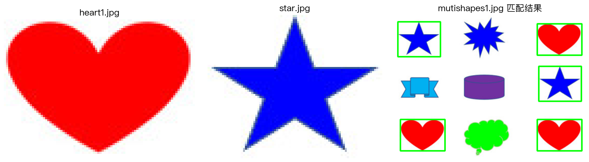
心型与星形模板都被送入匹配函数，匹配成功处以绿色框标示。参考原书第 20-14 页。
1. 扩充 ch20_4.py，增加框住比较类似的侠客。
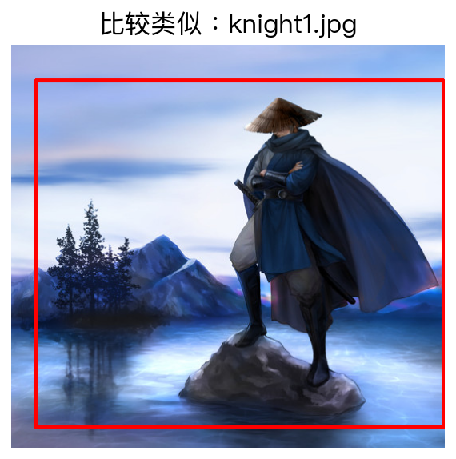
参考原书第 20-15 页。
2. 修正设计，列出所有的山脉。
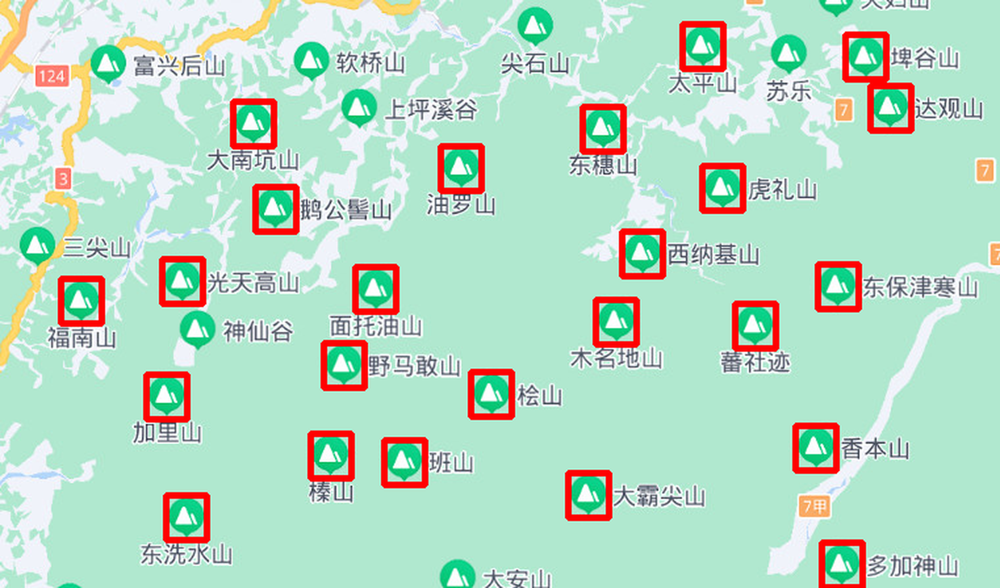
参考原书第 20-16 页。
3. 有一个匹配图像 university.jpg 与原始图像 map.jpg，请将大学用红色圈起来，同时列出此地图区域大学的数量。
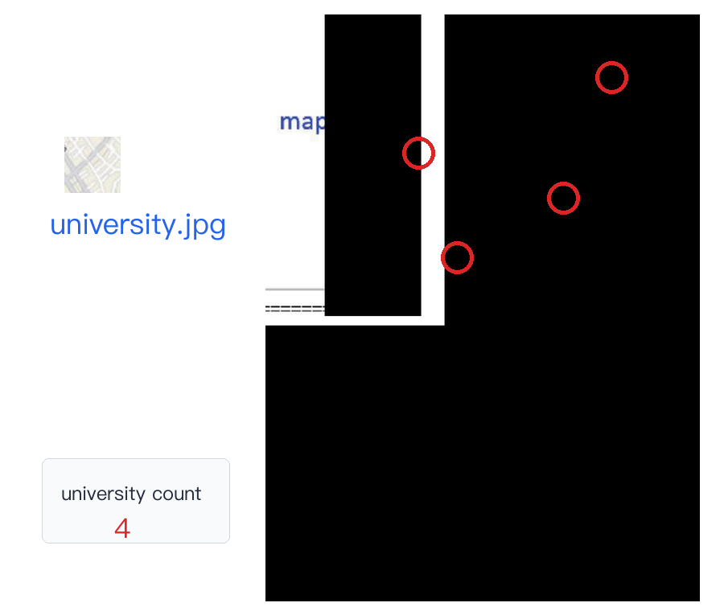
参考原书第 20-17 页。
4. 扩充 ch20_7.py，绘制起点到机场位置时，将线条绘到机场图示的中心点，并比较较近的机场路线。
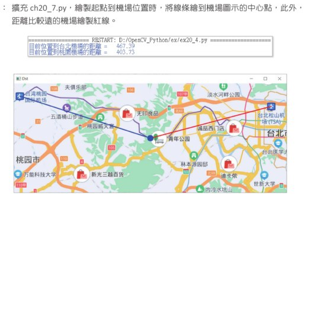
参考原书第 20-18 页。